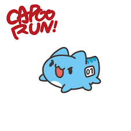

在台灣沒有漢人的歷史記述之前，
一千年前的苑里海邊，
秋天過後月圓的晚上
族人釀過小米酒，用簡單的醃魚招待了遠方的客人以後
開始那段深沉的祭歌
kay na pi ~~~ ka~~ ra:a'~~
那個年代可能沒有 tawkaS 和 SaySiyat 這兩個發音，SaySiyat 是住在 Siyat這個地方的意思，應該是後來族人的一個分支。 想像中的臺灣歷史，可能是這樣一段歷史。不是教科書上生硬的文字，而是山林原野中，哀怨的傳說，低吟的詩歌，如夢似醉的故事。 tawkas的傳說，已經很難尋覓。台灣的土地上，我們認同怎樣的族群 歷史 文化，我們此刻的所做所為，正在創造一種，新的道卡斯文化。 我用泰雅族的問候語 lokah su 來當作這個部落格的招呼語。用泰雅族的打獵 qmalup (賽夏語是 'oemalep)來當作部落格的名字， 同樣是大霸尖山的子民， 我想借用同胞的語彙，記錄我的旅程-- 新的道卡斯獵人學校。
校歌教唱

校徽徵稿
註冊需知
- 必需為原住民或者非原住民
- 瞭解對本校宗旨或者不瞭解
- 必需提錢來辦理